Do MLLMs Capture How Interfaces Guide User Behavior? A Benchmark for Multimodal UI/UX Design Understanding
User interface (UI) design goes beyond visuals to shape user experience (UX), underscoring the shift toward UI/UX as a unified concept. While recent studies have explored UI evaluation using Multimodal Large Language Models (MLLMs), they largely focus on surface-level features, overlooking how design choices influence user behavior at scale. To fill this gap, we introduce WiserUI-Bench, a novel benchmark for multimodal understanding of how UI/UX design affects user behavior, built on 300 real-world UI image pairs from industry A/B tests, with empirically validated winners that induced more user actions. For future design progress in practice, post-hoc understanding of why such winners succeed with mass users is also required; we support this via expert-curated key interpretations for each instance. Experiments across multiple MLLMs on WiserUI-Bench for two main tasks, (1) predicting the more effective UI image between an A/B-tested pair, and (2) explaining it post-hoc in alignment with expert interpretations, show that models exhibit limited understanding of the behavioral impact of UI/UX design. We believe our work will foster research on leveraging MLLMs for visual design in user behavior contexts.
User interface (UI) design is central to application development. While visual aesthetics lay its foundation, the fundamental goal is to steer user behavior during interaction, such as encouraging sign-ups or purchases, and thereby boost service revenue (Fogg, 2002). This behavioral focus expands to UI/UX design, uniting visual form with user experience (UX) considerations (Norman, 1988).
用户界面（UI）设计在应用开发中居于核心地位。视觉美感为其奠定基础，但根本目标是在交互过程中引导用户行为，例如促使用户注册或下单，从而提升服务收益（Fogg，2002）。这种对行为的关注把 UI 设计拓展为 UI/UX 设计，将视觉形式与用户体验（UX）的考量统一起来（Norman，1988）。
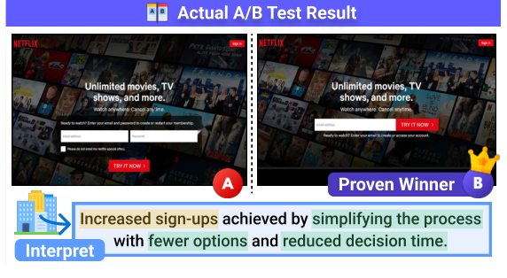
图 1：WiserUI-Bench 中一个源自真实世界、具备行为意识的设计决策示例，以 A/B 测试结果为依据，展示 UI 改动如何引导用户行为。
Practitioners validate such decisions through large-scale A/B tests that randomly assign users to alternative UI variants and measure which design more effectively drives the desired action (Kohavi et al., 2009). For example, as shown in Figure 1, version B achieves higher sign-ups overall, interpreted as reduced user friction from fewer options. Such interpretation reflects an abductive reasoning process (Hobbs et al., 1993; Bhagavatula et al., 2020), inferring the most plausible explanations for aggregate outcomes that are used to guide subsequent design decisions (Quin et al., 2024). Given that predicting and explaining these results is nontrivial even for humans, hinging on complex cognitive processes underlying user experience, assessing multimodal understanding of UI/UX design becomes a crucial challenge, requiring not only identifying visual elements but also reasoning about how they influence user behavior.
从业者通过大规模 A/B 测试来验证此类决策：把用户随机分配到不同的 UI 变体，衡量哪种设计能更有效地促成目标行为（Kohavi 等，2009）。例如图 1 所示，版本 B 的注册量整体更高，被解释为选项减少降低了用户阻力。这类解释体现了一种溯因推理过程（Hobbs 等，1993；Bhagavatula 等，2020）——为聚合结果推断出最合理的解释，用以指导后续设计决策（Quin 等，2024）。鉴于预测与解释这类结果即便对人类也非易事，其取决于用户体验背后复杂的认知过程，如何评估模型对 UI/UX 设计的多模态理解就成为一项关键挑战：它不仅要求识别视觉元素，还要求推理这些元素如何影响用户行为。
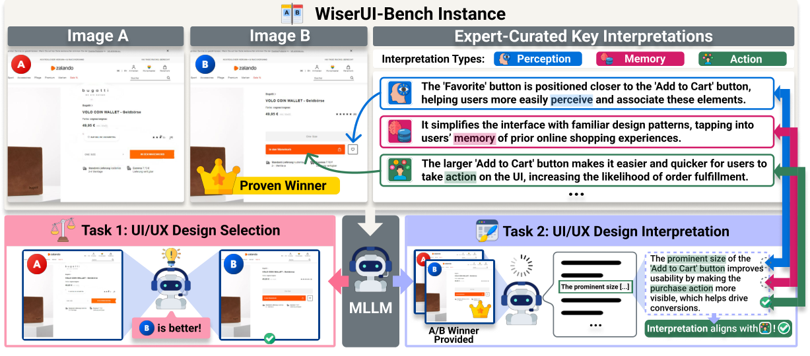
图 2：WiserUI-Bench 概览与两项主要任务。每个实例包含一对 UI 图像、经验证的 A/B 测试胜出方案，以及解释该结果的专家撰写关键解读；这些解读覆盖三个认知层面的 UX 维度，示例同时包含三者，多数实例则只涉及其中一部分。MLLM 需完成两项评估：（1）通过预测经验证的胜出方案，选出更有效的 UI/UX 设计；（2）解释给定胜出方案的有效性，以模型是否涵盖各条专家解读来度量。
Recent efforts have explored how to evaluate UI design quality with Multimodal Large Language Models (MLLMs); however, they all fall short in capturing the behavioral impact of UI/UX design, as summarized in Table 1. While some focus solely on basic visual, heuristic-based attributes (Yang and Li, 2024; Wu et al., 2024), others rely on handwritten critiques of individual UIs, lacking validation against real user data and offering limited coverage of cognitive aspects (Duan et al., 2024).
近期已有研究探索如何用多模态大语言模型（MLLM）评估 UI 设计质量，但如表 1 所示，它们都未能捕捉 UI/UX 设计对行为的影响：其中一部分只关注基础的视觉与启发式属性（Yang 和 Li，2024；Wu 等，2024），另一部分则依赖针对单个 UI 的手写评语，既缺乏真实用户数据验证，对认知层面的覆盖也有限（Duan 等，2024）。
To address these limitations, we introduce WiserUI-Bench (Pairwise UI/UX Design Understanding Benchmark), a novel benchmark for evaluating a model’s multimodal understanding of how UI/UX design affects user behavior. WiserUI-Bench comprises 300 real-world UI image pairs with winning variants verified by A/B tests from actual companies, spanning varied contexts and sourced from reliable platforms. Each pair includes expert-curated key interpretations, 684 in total, written post-hoc with knowledge of the winner to explain its effectiveness, covering core behavioral drivers. An example instance is illustrated in the upper part of Figure 2. Grounded in large-scale real user behavior data, our benchmark captures authentic usage and preference patterns, providing a reliable basis for evaluation. Each interpretation is tagged with one of the three cognitive UX dimensions articulated by Norman (2007): perception (what users notice), memory (what users remember), and action (how users act).
为弥补这些不足，我们提出 WiserUI-Bench（成对 UI/UX 设计理解基准），一个用于评估模型对「UI/UX 设计如何影响用户行为」之多模态理解能力的新型基准。WiserUI-Bench 包含 300 对真实世界的 UI 图像，其胜出变体均由真实企业的 A/B 测试验证，情境多样且取自可靠平台。每一对图像都配有专家撰写的关键解读，共 684 条；这些解读在已知胜出方案的前提下事后撰写，用以解释其有效性并覆盖核心的行为驱动因素，图 2 上半部分给出了一个实例。由于立足于大规模真实用户行为数据，本基准捕捉到真实的使用与偏好模式，为评估提供了可靠依据。每条解读都被标注为 Norman（2007）所阐述的三个 UX 认知维度之一：感知（用户注意到什么）、记忆（用户记住什么）与行动（用户如何行动）。
Our benchmark supports two core tasks, illustrated in the lower part of Figure 2: (1) selecting the more effective UI/UX design from a given pair by predicting the A/B test-verified winner, and (2) interpreting the UI/UX effectiveness of the given winner by assessing alignment between model-generated and expert-curated interpretations. This task setup captures the essential capabilities for UI/UX assessment, not only to identify which design better guides user behavior, but also to reliably explain why in a post-hoc manner.
本基准支持两项核心任务（图 2 下半部分）：（1）通过预测经 A/B 测试验证的胜出方案，从给定图像对中选出更有效的 UI/UX 设计；（2）通过衡量模型生成解读与专家解读之间的吻合程度，解释给定胜出方案的 UI/UX 有效性。该任务设置覆盖 UI/UX 评估所需的核心能力：不仅要判断哪种设计能更好地引导用户行为，还要以事后方式可靠地解释其原因。
Experiments on a broad range of proprietary and open-source MLLMs on WiserUI-Bench show that existing models struggle with visual reasoning in user behavior contexts. Models perform near-random on selection, and their post-hoc interpretations remain insufficient to reach expert level. We expect that WiserUI-Bench and our novel UI/UX-focused tasks will spur further research on this critical and underexplored, user-centered area, advancing behavior-aware reasoning about visual design in MLLMs.
在 WiserUI-Bench 上对多种闭源与开源 MLLM 的实验表明，现有模型在用户行为情境下的视觉推理上表现吃力：选择任务接近随机水平，事后解读也远未达到专家水准。我们期待 WiserUI-Bench 与本文提出的面向 UI/UX 的新任务，能推动这一关键而尚待探索的以用户为中心的方向，促进 MLLM 对视觉设计的行为感知推理。
| Benchmark | # Samples | Unit | Source Quality | Source Type | Large-Scale User Validation | Expert Interpretation | Evaluation Objective |
| Yang and Li (2024) | 382 | Single | Legacy UI | Mobile | ✗ | ✗ | Guideline Violation Detection |
| BetterWeb (Wu et al., 2024) | 892 | Pair | Synthetic | Mobile | ✗ | ✗ | Basic Visual Quality |
| UICrit (Duan et al., 2024) | 983 | Single | Legacy UI | Mobile | ✗ | ✓ | UI Design Critique |
| WiserUI-Bench (Ours) | 300 | Pair | Actual Production | Mobile + Web | ✓ (Real A/B Test) | ✓ | UI/UX Design Understanding (User Behavior-Focused) |
表 1：WiserUI-Bench 与既有 UI 评估基准的对比。
In summary, our main contributions are:
综上，本文的主要贡献如下：
We introduce a novel and challenging task of multimodal UI/UX understanding that centers on the behavioral impact of design.
• 我们提出一项新颖且具挑战性的多模态 UI/UX 理解任务，以设计的行为影响为核心。
We release WiserUI-Bench, a benchmark of 300 real-world UI pairs uniquely constructed from verified results of large-scale industry A/B tests, along with 684 carefully curated expert key interpretations.
• 我们发布 WiserUI-Bench，一个包含 300 对真实世界 UI 图像的基准；其独特之处在于构建自大规模工业界 A/B 测试的验证结果，并附带 684 条经专家精心撰写的关键解读。
Through comprehensive experiments and analyses across diverse MLLMs, we uncover their limited ability to understand the behavioral impact of UI/UX design, highlighting a critical gap in current visual reasoning.
• 通过在多种 MLLM 上开展系统实验与分析，我们揭示了这些模型在理解 UI/UX 设计行为影响上的能力局限，凸显出当前视觉推理中的一项关键空白。
Visual reasoning benchmarks for Multimodal Large Language Models (MLLMs) evaluate models’ ability to process visual information and reason at a cognitive level. While some target general tasks (Yue et al., 2024; Liu et al., 2024b; Fu et al., 2024; Li et al., 2024b), others focus on specific domains like mathematics or science (Hao et al., 2025; Lu et al., 2024; Xu et al., 2025). However, few benchmarks address reasoning about human behavior or preference patterns in visual contexts. Moreover, although some studies explore visual reasoning across multiple images (Cheng et al., 2025; Zhao et al., 2024), such cases remain rare. Our task incorporates both aspects, reasoning over paired UI images and aligning with behavior patterns, as captured by actual A/B test outcomes.
面向多模态大语言模型（MLLM）的视觉推理基准，用于评估模型处理视觉信息并在认知层面进行推理的能力。其中一些面向通用任务（Yue 等，2024；Liu 等，2024b；Fu 等，2024；Li 等，2024b），另一些则聚焦数学或科学等特定领域（Hao 等，2025；Lu 等，2024；Xu 等，2025）。然而，少有基准涉及对视觉情境中人类行为或偏好模式的推理；虽有研究探索跨多图的视觉推理（Cheng 等，2025；Zhao 等，2024），此类情形仍属罕见。本文任务同时涵盖这两个方面：对成对的 UI 图像作推理，并与真实 A/B 测试结果所体现的行为模式相对齐。
Recent advances have driven progress in evaluating UI quality with MLLMs. Yang and Li (2024) propose a benchmark for detecting guideline violations in individual screens, while Wu et al. (2024) generates synthetic UI pairs via perturbations such as color noise or spacing changes. However, both are limited to heuristic analysis of surface-level appearance. Duan et al. (2024) evaluates single screens using expert-critique annotations, but it lacks validation with real-world user behavior and relies on RICO (Deka et al., 2017), an outdated, mobile-only dataset that limits its relevance to today’s production-level designs. Prior work also suggests that pairwise evaluation yields more reliable signals, particularly for subjective tasks like ours that target behavior patterns captured by real-world A/B tests (Abel et al., 2020; Bawabe et al., 2021). In this context, WiserUI-Bench offers a stronger foundation by grounding design effectiveness in large-scale user behavior data and requiring models to engage in deeper, nuanced reasoning over both visuals and UX in a pairwise format.
近期的进展推动了用 MLLM 评估 UI 质量的研究。Yang 和 Li（2024）提出一个检测单个屏幕中准则违反情况的基准，Wu 等（2024）则通过颜色噪声或间距变化等扰动生成合成的 UI 图像对，但二者都局限于对表层外观的启发式分析。Duan 等（2024）用专家评语标注评估单个屏幕，却缺乏真实用户行为验证，且依赖 RICO（Deka 等，2017）这一过时、仅限移动端的数据集，限制了其与当今生产级设计的关联度。已有研究还表明，成对评估能产生更可靠的信号，对本文这类以真实 A/B 测试所捕捉的行为模式为目标的主观任务尤其如此（Abel 等，2020；Bawabe 等，2021）。在此背景下，WiserUI-Bench 提供了更扎实的基础：它把设计有效性立足于大规模用户行为数据，并要求模型以成对形式对视觉与 UX 展开更深入、细致的推理。
Efforts to simulate human behavior with AI are ongoing. Park et al. (2023) places LLM-driven characters in a sandbox town, producing socially plausible interactions. Lu et al. (2025a) moves closer to real behavior by using actual platform logs to predict next user actions from prior context, yet remains text-only. In the UI domain, Lu et al. (2025b) and Wang et al. (2025a) deploy persona-based agents to browse interfaces and examine how designs may steer user behavior; the former checks realism only via qualitative interviews, while the latter compares against an actual A/B test but only under a single scenario. By contrast, our work grounds evaluation in numerous real-user A/B test results and introduces diverse multimodal tasks that reason over UI variant image pairs to predict and explain user behavior.
用 AI 模拟人类行为的努力仍在持续。Park 等（2023）把 LLM 驱动的角色放入一个沙盒小镇，产生符合社交常理的互动；Lu 等（2025a）借助真实平台日志、依据先前上下文预测用户的下一步行为，向真实行为靠近了一步，但仍只使用文本。在 UI 领域，Lu 等（2025b）与 Wang 等（2025a）部署基于人物角色的智能体浏览界面，考察设计可能如何引导用户行为：前者仅通过定性访谈检验真实性，后者虽与真实 A/B 测试对比，但只覆盖单一场景。相比之下，本工作把评估立足于大量真实用户的 A/B 测试结果，并提出多样化的多模态任务，通过对 UI 变体图像对作推理来预测与解释用户行为。
We propose WiserUI-Bench, a new benchmark for evaluating multimodal understanding of UI/UX design, a key factor in crafting interfaces that influence user behavior.
我们提出 WiserUI-Bench，一个用于评估 UI/UX 设计多模态理解能力的新基准——UI/UX 设计是打造能够影响用户行为的界面的关键因素。
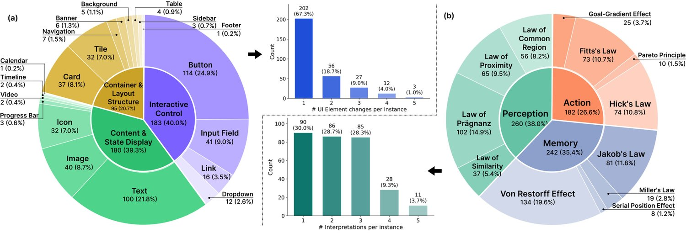
图 3：WiserUI-Bench 中（a）UI 改动元素类型与（b）专家解读的分布。
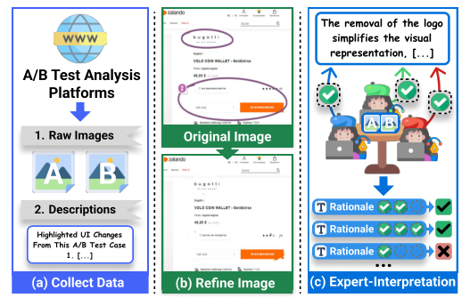
图 4：基准构建流程。（a）从可靠平台采集原始 A/B 测试数据；（b）对 UI 图像加以精修以提升清晰度；（c）由 UI/UX 专家撰写解释测试结果的关键解读。
To construct a benchmark that faithfully reflects real-world UI/UX design decisions, we collect UI images from industry-validated A/B testing data. Specifically, we aggregate data from widely recognized A/B testing and analysis platforms11 1 https://vwo.com/success-stories/, https://goodui.org/leaks/, https://abtest.design/, which showcase large-scale A/B tests conducted by companies across various industries and regions. These sources provide both UI variants and verified outcomes based on actual user behavior data. By grounding our benchmark in such real, rigorously tested cases, we ensure a credible basis for evaluating UI/UX design understanding in practical scenarios.
为构建一个忠实反映真实世界 UI/UX 设计决策的基准，我们从经工业界验证的 A/B 测试数据集中采集 UI 图像。具体而言，我们汇总了来自广受认可的 A/B 测试与分析平台11 1 https://vwo.com/success-stories/, https://goodui.org/leaks/, https://abtest.design/ 的数据；这些平台展示各行业、各地区企业开展的大规模 A/B 测试，既提供 UI 变体，也提供基于真实用户行为数据的验证结果。把基准立足于这类经过严格检验的真实案例，我们得以在实用场景中为 UI/UX 设计理解能力的评估提供可信依据。
As illustrated in Figure 4, our curation process involves multiple stages to ensure high-quality annotations. First, we extract raw UI images and accompanying textual descriptions from our selected platform sources. Next, we refine these images by eliminating any visual markers that were externally added, such as arrows or circles, using inpainting techniques, to preserve a clean, unbiased evaluation of visual reasoning.
如图 4 所示，遴选过程包含多个阶段以保证标注质量。首先，我们从选定的平台来源中提取原始 UI 图像与配套文字描述。其次，我们用图像修复技术消除外部添加的视觉标记（如箭头或圆圈），对图像加以精修，以保证视觉推理评估的干净与无偏。
Finally, we construct key expert interpretations explaining the winning variant’s superior performance. Such expert involvement is essential, as interpreting user behavior often requires deep domain expertise. Three experienced UI/UX experts aware of the A/B test outcomes independently annotated each instance, instructed to identify (i) the key UI modification and (ii) its corresponding behavioral implication. As a pre-defined quality control step, only interpretations where at least two experts independently converged on substantially overlapping findings were retained, yielding 684 final interpretations (562 with full, 122 with two-way agreement) from 845 initial candidates. Each interpretation was further tagged with the most relevant law from a curated set of 12 UX laws. Since user behavior is often shaped by multiple factors, a single instance may include multiple interpretations. See Appendix A.1 for details.
最后，我们撰写关键解读，解释胜出变体为何表现更优。这类专家介入不可或缺，因为解读用户行为往往需要深厚的领域专长。三位了解 A/B 测试结果的资深 UI/UX 专家独立标注每个实例，并被要求指出（i）关键的 UI 改动与（ii）其对应的行为含义。作为预设的质量控制步骤，只有至少两位专家独立收敛到实质重合结论的解读才被保留：从 845 条初始候选中得到 684 条最终解读（其中 562 条为三方一致，122 条为两方一致）。每条解读还被进一步标注为一套经遴选的 12 条 UX 定律中最相关的一条。由于用户行为常受多重因素塑造，单个实例可能包含多条解读，详情见附录 A.1。
Our pipeline produces a benchmark of 300 real-world UI image pairs, each with a definitive winner identified through A/B test results and annotated with expert-curated key interpretations of the core design factors driving user behavior, totaling 684 entries. We include detailed statistics in Appx. A.2.
该流程产出一个包含 300 对真实世界 UI 图像的基准：每一对都由 A/B 测试结果确定了明确的胜出方案，并配有专家撰写的关键解读，说明驱动用户行为的核心设计因素，解读总数达 684 条。详细统计见附录 A.2。
Ensuring contextual diversity is essential, as effective UI/UX strategies vary widely across use cases (Oinas-Kukkonen and Harjumaa, 2018). For example, page types correspond to different stages of the user journey, requiring distinct strategies. To capture this, WiserUI-Bench spans 11 page types, 13 industry domains, and two device types.
确保情境多样性十分必要，因为有效的 UI/UX 策略在不同使用场景间差异很大（Oinas-Kukkonen 和 Harjumaa，2018）。例如，页面类型对应用户旅程的不同阶段，需要不同的策略。为此，WiserUI-Bench 覆盖 11 种页面类型、13 个行业领域与 2 种设备类型。
Moreover, we annotate UI differences using element–attribute associations, specifying the UI element being modified and the corresponding attribute change (e.g., a button with a position change), to capture real-world UI variants with concurrent modifications. On average, each instance contains 1.53 element-level and 1.99 attribute-level annotations, spanning 19 element types and 14 attribute types. We further group the element types by their primary functional roles (Figure 3(a)): Interactive Control, which directly elicits intentional user actions; Content & State Display, which primarily conveys information, semantics, or system state; and Container & Layout Structure, which organizes spatial layout and guides attention at a structural level.
此外，我们用元素—属性关联来标注 UI 差异，指明被修改的 UI 元素及对应的属性变化（例如按钮发生位置变化），以刻画现实中存在并发修改的 UI 变体。平均每个实例含 1.53 项元素级标注与 1.99 项属性级标注，涵盖 19 种元素类型与 14 种属性类型。我们还按主要功能角色把元素类型分组（图 3(a)）：交互控件，直接引发用户的有意操作；内容与状态展示，主要传达信息、语义或系统状态；容器与布局结构，组织空间布局并在结构层面引导注意。
WiserUI-Bench also exhibits diversity in the interpretations used to explain user behavior, as shown in Figure 3(b), with an average of 2.28 interpretations per instance. The tagged UX laws are grouped into three cognitive dimensions of UX, perception, memory, and action, following Norman (2007), with four laws assigned to each.
WiserUI-Bench 在用于解释用户行为的解读上也呈现多样性（图 3(b)），平均每个实例有 2.28 条解读。所标注的 UX 定律按 Norman（2007）归入 UX 的三个认知维度——感知、记忆与行动，每个维度各对应 4 条定律。
Proper evaluation of a model’s multimodal understanding of UI/UX design requires assessing not only its ability to predict which design more effectively guides user behavior, but also whether it can explain why in a post-hoc manner, grounding its reasoning in visual and behavioral cues. To this end, we define two main tasks, selection and interpretation, as illustrated in Figure 2, both essential for demonstrating genuine understanding. Success requires identifying key visual differences between two UI variants, as well as inferring the underlying behavioral goal from context (e.g., promoting sign-ups) and how the interface supports that goal.
要妥善评估模型对 UI/UX 设计的多模态理解，不仅要看它能否预测哪种设计更有效地引导用户行为，还要看它能否以事后方式解释其原因，并把推理建立在视觉与行为线索之上。为此，我们定义了选择与解读两项主要任务（图 2），二者都是体现真正理解所必需的。要完成任务，模型既要识别两个 UI 变体之间的关键视觉差异，也要从上下文推断出潜在的行为目标（例如促进注册）以及界面如何支撑该目标。
The first task assesses whether the model can identify which of two UI images is more effective at influencing user behavior, with the correct answer determined by large-scale A/B testing run by real companies. Although the task is framed as a binary choice, solving it effectively requires nuanced visual reasoning beyond surface-level comparison.
第一项任务评估模型能否识别两张 UI 图像中哪一张在影响用户行为上更有效，正确答案由真实企业开展的大规模 A/B 测试确定。尽管该任务被设定为二选一，要有效解决它却需要超越表层比较的细致视觉推理。
The second task evaluates a model’s post-hoc interpretation ability on the observed results. Unlike the first task, it presents the winning UI/UX design upfront and asks the model to explain the factors contributing to its effectiveness in guiding user behavior. The model’s explanation is then compared to expert-curated key interpretations, with the degree of alignment serving as a measure of the quality of its expert-level interpretive understanding.
第二项任务评估模型对已观察结果的事后解读能力。与第一个任务不同，它先行给出胜出的 UI/UX 设计，要求模型解释其有效引导用户行为的因素；随后把模型的解释与专家撰写的关键解读作比较，以二者的吻合程度衡量其专家级解读理解的优劣。
We evaluate a diverse set of MLLMs, spanning both proprietary and open-source models. On the proprietary side, we include o1 (OpenAI et al., 2024b), GPT-5.1 (OpenAI, 2025), GPT-4o (OpenAI et al., 2024a), Claude 4.5 Sonnet (Anthropic, 2025), Claude 3.5 Sonnet (Anthropic, 2024), all noted for their strong visual reasoning. For open-source models, we evaluate widely adopted models such as Qwen3-VL (30B-A3B, 8B) (Bai et al., 2025a), Qwen2.5-VL (7B, 32B) (Bai et al., 2025b), InternVL-2.5 (8B, 38B) (Chen et al., 2025), LLaVA-NeXT-7B (Liu et al., 2024a) and LLaVA-OneVision-7B (Li et al., 2024a). Refer to Appendix B.1 for details.
我们评估了多样化的 MLLM，涵盖闭源与开源模型。闭源方面包括 o1（OpenAI 等，2024b）、GPT-5.1（OpenAI，2025）、GPT-4o（OpenAI 等，2024a）、Claude 4.5 Sonnet（Anthropic，2025）、Claude 3.5 Sonnet（Anthropic，2024），它们均以较强的视觉推理著称。开源方面，我们评估了被广泛采用的 Qwen3-VL（30B-A3B、8B）（Bai 等，2025a）、Qwen2.5-VL（7B、32B）（Bai 等，2025b）、InternVL-2.5（8B、38B）（Chen 等，2025）、LLaVA-NeXT-7B（Liu 等，2024a）与 LLaVA-OneVision-7B（Li 等，2024a）。详情见附录 B.1。
We report model accuracies across input-order variations of each UI image pair, reflecting the multi-image input setting. Specifically, we report: (1) First Accuracy (FA), when the more effective UI/UX design is presented first in the input; (2) Second Accuracy (SA), when it is presented second; and (3) Average Accuracy (AA), the mean of FA and SA, reflecting overall correctness. Finally, we compute (4) Consistent Accuracy (CA), which checks whether the model selects the same, correct UI across both input orders of each pair. This metric isolates the model’s core visual reasoning ability by ensuring that its choices are based on content rather than position bias, a well-known issue in pairwise comparison settings (Wang et al., 2025b; Zhang et al., 2023). (Random guessing yields a CA of 25%: since there’s a 50% chance of being correct in each order.) All evaluations are conducted over three independent runs, and we report the averaged results. Experiment details, including the prompts, are provided in Appendix B.2.
我们报告模型在各 UI 图像对输入顺序变化下的准确率，以反映多图输入设置。具体而言，我们报告：（1）首位准确率（FA）——更有效的 UI/UX 设计在输入中位于首位时；（2）次位准确率（SA）——其位于次位时；（3）平均准确率（AA）——FA 与 SA 的均值，反映整体正确率。最后我们计算（4）一致准确率（CA），检验模型在同一对图像的两种输入顺序下是否都选对同一个 UI。该指标通过确保选择基于内容而非位置偏置，剥离出模型的核心视觉推理能力；位置偏置是成对比较设置中的已知问题（Wang 等，2025b；Zhang 等，2023）。（随机猜测的 CA 为 25%：因为在每种顺序下各有 50% 的概率答对。）所有评估均在三次独立运行上进行，我们报告平均结果。实验细节（含提示）见附录 B.2。
| Overall | IC | CSD | CLS | Mixed | ||||||||
| # Cases | (300) | (100) | (79) | (49) | (72) | |||||||
| FA | SA | AA | CA | AA | CA | AA | CA | AA | CA | AA | CA | |
| Random | 50.00 | 50.00 | 50.00 | 25.00 | 50.00 | 25.00 | 50.00 | 25.00 | 50.00 | 25.00 | 50.00 | 25.00 |
| o1 | 16.56 | 97.78 | 57.17 | 15.56 | 55.67 | 16.00 | 55.70 | 11.81 | 56.46 | 11.56 | 61.34 | 21.76 |
| GPT-5.1 | 35.67 | 81.33 | 58.50 | 33.33 | 58.67 | 33.33 | 59.28 | 35.02 | 54.42 | 25.17 | 60.19 | 37.04 |
| GPT-4o | 31.89 | 88.33 | 60.11 | 30.11 | 59.67 | 31.00 | 61.60 | 29.96 | 51.70 | 17.69 | 64.81 | 37.50 |
| Claude 4.5 Sonnet | 34.33 | 79.33 | 56.83 | 32.33 | 53.50 | 29.00 | 60.76 | 37.97 | 55.10 | 34.69 | 58.33 | 29.17 |
| Claude 3.5 Sonnet | 26.11 | 86.67 | 56.39 | 24.22 | 56.67 | 22.67 | 57.59 | 29.96 | 51.70 | 12.24 | 57.87 | 28.24 |
| Qwen3-VL-30B-A3B | 16.67 | 88.00 | 52.33 | 15.00 | 53.33 | 16.67 | 51.69 | 12.66 | 54.08 | 17.69 | 50.46 | 13.43 |
| Qwen3-VL-8B | 19.67 | 87.67 | 53.67 | 19.33 | 51.67 | 16.00 | 57.38 | 23.63 | 49.66 | 16.33 | 55.09 | 21.30 |
| Qwen2.5-VL-32B | 33.67 | 81.44 | 57.56 | 31.00 | 58.67 | 31.67 | 56.54 | 28.69 | 58.84 | 28.57 | 56.25 | 34.26 |
| Qwen2.5-VL-7B | 23.00 | 77.89 | 50.44 | 12.89 | 48.17 | 8.67 | 56.12 | 19.41 | 43.88 | 9.52 | 51.85 | 13.89 |
| InternVL-2.5-38B | 55.67 | 60.00 | 57.83 | 34.56 | 56.17 | 34.33 | 59.70 | 36.29 | 55.10 | 28.57 | 59.95 | 37.04 |
| InternVL-2.5-8B | 58.33 | 45.67 | 52.00 | 21.33 | 52.17 | 23.00 | 48.73 | 15.61 | 57.14 | 25.85 | 51.85 | 22.22 |
| LLaVA-NeXT-7B | 54.44 | 40.56 | 47.50 | 10.78 | 48.50 | 12.67 | 43.67 | 8.44 | 46.60 | 8.16 | 50.93 | 12.50 |
| LLaVA-OneVision-7B | 19.78 | 81.56 | 50.67 | 10.44 | 50.00 | 11.00 | 54.43 | 13.50 | 47.28 | 3.40 | 49.77 | 11.11 |
表 2：WiserUI-Bench 上 UI/UX 设计选择任务的结果，按整体与 UI 改动元素类型分列。各指标的最优与次优模型得分分别以粗体与下划线标出。就 CA 而言，每个模型内部表现最优与次优的 UI 元素类型分别以蓝色与黄色高亮。所有指标均以百分比（%）报告。
Table 2 summarizes model performance on the UI/UX design selection task. Most AA scores hover only slightly above the 50% random baseline for a binary choice. Moreover, they are inflated by strong position bias, especially in proprietary models and the Qwen-VL family, which tend to pick the second image. When we examine CA, the order-invariant metric, performance drops back to near-random levels. Interestingly, InternVL-2.5-38B scores slightly higher than proprietary models on CA, but still fall short of being adequate. Contrary to expectations, o1 shows the strongest bias and a lower CA than GPT-4o, suggesting that self-reasoning of o1 does not transfer well to this task. Most smaller (7B/8B) models perform significantly worse than larger ones, confirming the scaling trend. Overall, existing MLLMs struggle to consistently predict the more effective UI/UX design in real-world UI pairs.
表 2 汇总了模型在 UI/UX 设计选择任务上的表现。多数 AA 得分仅略高于二选一的 50% 随机基线，且被强烈的位置偏置所抬高：闭源模型与 Qwen-VL 系列尤其明显，它们倾向于选择第二张图像。当我们考察与顺序无关的 CA 时，表现回落到接近随机的水平。有意思的是，InternVL-2.5-38B 的 CA 略高于闭源模型，但仍谈不上够用。与预期相反，o1 表现出最强的偏置，CA 低于 GPT-4o，说明 o1 的自我推理未能很好地迁移到本任务。多数较小规模（7B/8B）模型的表现明显逊于更大规模模型，印证了规模趋势。总体而言，现有 MLLM 难以在真实世界的 UI 图像对中一贯地预测出更有效的 UI/UX 设计。
| Model | Method | FA | SA | AA | CA |
| GPT-4o | Zero-Shot | 31.89 | 88.33 | 60.11 | 30.11 |
| CoCoT | 33.00 | 83.33 | 58.17 | 29.67 | |
| Self-Refine | 32.44 | 82.67 | 57.56 | 29.89 | |
| DDCoT | 36.56 | 86.89 | 61.72 | 34.78 | |
| MAD (R1) | 51.22 | 67.44 | 59.33 | 39.00 | |
| MAD (R3) | 34.44 | 80.89 | 57.67 | 29.89 | |
| Claude 3.5 Sonnet | Zero-Shot | 26.11 | 86.67 | 56.39 | 24.22 |
| CoCoT | 29.78 | 81.78 | 55.78 | 27.22 | |
| Self-Refine | 25.67 | 76.44 | 51.06 | 20.44 | |
| DDCoT | 26.22 | 86.67 | 56.44 | 23.56 | |
| MAD (R1) | 39.00 | 72.89 | 55.94 | 30.00 | |
| MAD (R3) | 23.33 | 85.44 | 54.39 | 21.44 |
表 3：WiserUI-Bench 上不同推理策略下 UI/UX 设计选择任务的结果，数值为百分比（%）。
The UI element-wise results in Table 2 show performance variations across change type categories, while preserving overall trends: GPT-4o and InternVL-2.5-38B generally achieve the highest AA and CA, respectively. Focusing on CA, Mixed cases, where changes span multiple functional UI element groups, often yield relatively high performance, suggesting that aggregated multi-functional changes may provide richer behavioral cues than single-group modifications. Interactive Control (IC) and Content & State Display (CSD) show broadly comparable performance overall, although their relative ranking varies across models. Across model families, GPT-based models show relative strength on Mixed cases, whereas Claude-based models do so on CSD, which often involves content-level changes (e.g., images or text). By contrast, Container & Layout Structure (CLS) is the most challenging category, with sharply reduced CA across most models, reflecting limited sensitivity to structural layout changes, such as card or tile-level differences. Notably, Claude 4.5 Sonnet perform relatively better on CLS than other models.
表 2 中按 UI 元素划分的结果显示，各改动类型类别上的表现存在差异，但整体趋势保持一致：GPT-4o 与 InternVL-2.5-38B 分别在 AA 与 CA 上总体最高。聚焦 CA，改动横跨多个功能性 UI 元素组的混合（Mixed）情形往往表现较好，说明聚合式多功能改动可能比单组改动提供更丰富的行为线索。交互控件（IC）与内容与状态展示（CSD）整体表现大致相当，尽管其相对排序随模型而变；跨模型家族看，GPT 系模型在混合情形上相对占优，而 Claude 系模型在 CSD 上占优——CSD 常涉及内容层面的改动（如图像或文字）。相比之下，容器与布局结构（CLS）是最具挑战的类别，多数模型的 CA 大幅下降，反映出模型对卡片或图块级差异等结构性布局改动敏感度有限。值得注意的是，Claude 4.5 Sonnet 在 CLS 上的表现相对优于其他模型。
We additionally evaluate various reasoning strategies on GPT-4o and Claude 3.5 Sonnet to assess their effectiveness, including Contrastive Chain-of-Thought (CoCoT) (Zhang et al., 2024), Self-Refine (Madaan et al., 2023), Duty-Distinct Chain-of-Thought (DDCoT) (Zheng et al., 2023), and Multi-Agent Debate (MAD) (Liang et al., 2024; Du et al., 2023). For MAD, we stop and moderate the debate after the first (R1) and third (R3) rounds. As shown in Table 3, AA scores remain similar to or below the zero-shot setting, while CA scores often surpass it, especially for MAD (R1) across models, DDCoT on GPT-4o, and CoCoT on Claude 3.5 Sonnet. This gain is mainly due to reduced position bias, enabling more consistent decisions regardless of input order. MAD (R1) performs well by generating and moderating conflicting perspectives, which suits this human behavior pattern-driven task, benefiting from multi-perspective reasoning. However, excessive internal debate may hurt performance, as seen in the drop with MAD (R3).
我们还在 GPT-4o 与 Claude 3.5 Sonnet 上额外评估了多种推理策略的有效性，包括对比式思维链（CoCoT）（Zhang 等，2024）、Self-Refine（Madaan 等，2023）、职责分离式思维链（DDCoT）（Zheng 等，2023）与多智能体辩论（MAD）（Liang 等，2024；Du 等，2023）。对于 MAD，我们分别在第一轮（R1）与第三轮（R3）后停止并裁决辩论。如表 3 所示，AA 得分与零样本设置持平或更低，而 CA 得分常常超越零样本，尤其在 MAD（R1）（跨模型一致）、DDCoT（GPT-4o）与 CoCoT（Claude 3.5 Sonnet）上。这一增益主要来自位置偏置的降低，使模型无论输入顺序如何都能作出更一致的判断。MAD（R1）表现良好，得益于它生成并裁决相互冲突的观点，契合本任务由人类行为模式驱动的特性，从多视角推理中获益；然而过度的内部辩论可能损害性能，MAD（R3）的下滑即为一例。
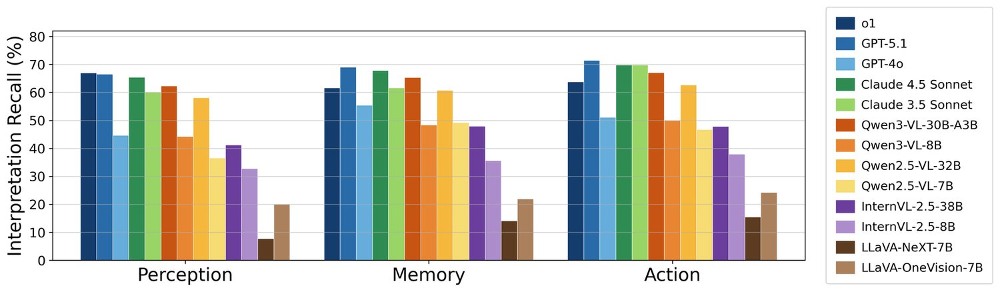
图 5：WiserUI-Bench 上按 UX 维度划分的 UI/UX 设计解读任务结果。
| Model | Interpretation | Instance-level |
| Recall | Recall | |
| o1 | 64.18 | 78.33 |
| GPT-5.1 | 68.71 | 79.00 |
| GPT-4o | 50.15 | 66.67 |
| Claude 4.5 Sonnet | 67.40 | 80.33 |
| Claude 3.5 Sonnet | 63.16 | 78.67 |
| Qwen3-VL-30B-A3B | 64.62 | 74.00 |
| Qwen3-VL-8B | 47.22 | 56.00 |
| Qwen2.5-VL-32B | 60.23 | 73.00 |
| Qwen2.5-VL-7B | 43.71 | 61.67 |
| InternVL-2.5-38B | 45.32 | 59.33 |
| InternVL-2.5-8B | 35.09 | 51.67 |
| LLaVA-NeXT-7B | 11.99 | 21.67 |
| LLaVA-OneVision-7B | 21.78 | 33.33 |
表 4：WiserUI-Bench 上 UI/UX 设计解读任务的结果，数值为百分比（%）。
To judge how well a model’s generated interpretation explains the observed outcome, we compare it against expert-curated key interpretations for each instance. Since we let models produce free-form explanations, their outputs often differ substantially in wording and verbosity even when conveying similar meaning; accordingly, we prioritize semantic alignment over surface-level lexical overlap. Specifically, we instruct the model to enumerate all relevant factors in its explanation, and each expert interpretation is independently evaluated in a binary manner, whether it is fully captured by the explanation or not. We report two metrics: Interpretation Recall, measuring the proportion of expert interpretations captured, and Instance-level Recall, which counts an instance as correct if at least one expert interpretation is captured. Binary inclusion judgments are made using a GPT-4o-based evaluator (Liu et al., 2023), validated against human judgments on 1,000 random samples (83.0% accuracy, Cohen’s kappa 0.66). The prompts used, along with the results of BLEU, ROUGE, METEOR, and BERTScore (Papineni et al., 2002; Lin, 2004; Banerjee and Lavie, 2005; Zhang et al., 2020) are reported in the Appendix B.3.
为判断模型生成的解读在多大程度上解释了观察到的结果，我们将其与每个实例的专家关键解读作比较。由于我们让模型生成自由形式的解释，即便含义相近，其输出在措辞与详略上也常常差异很大；因此我们优先考察语义对齐，而非表层的词汇重叠。具体地，我们要求模型在解释中枚举所有相关因素，并对每条专家解读独立作二值判断——是否被该解释完整涵盖。我们报告两个指标：解读召回率，衡量被涵盖的专家解读比例；实例级召回率，只要某实例有至少一条专家解读被涵盖即计为正确。二值的涵盖判断由一个基于 GPT-4o 的评估器作出（Liu 等，2023），并在 1,000 条随机样本上与人类判断对照验证（准确率 83.0%，Cohen’s kappa 0.66）。所用提示，以及 BLEU、ROUGE、METEOR 与 BERTScore（Papineni 等，2002；Lin，2004；Banerjee 和 Lavie，2005；Zhang 等，2020）的结果见附录 B.3。
Table 4 reports performance on the UI/UX design interpretation task. Recent models such as GPT-5.1 and Claude 4.5 Sonnet are among the strongest performers, although the overall results remain far from saturated. Some models, such as o1 and Claude 3.5 Sonnet, also show relatively strong post-hoc interpretation given the more effective variant, despite being weaker on selection in Task 1. By contrast, models such as GPT-4o and InternVL-2.5-38B, which were relatively strong on Task 1 selection, do not maintain the same level of advantage under this setting. Taken together, these observations suggest that selecting the better design and explaining its advantage are related but dissociable capabilities. Within the smaller-model regime, Qwen-VL variants align more closely with expert interpretations than other 7B/8B models, and larger Qwen-VL models consistently outperform their smaller counterparts. The persistent gap between Interpretation Recall and Instance-level Recall suggests that models often recover only part of the expert interpretations, rather than covering it comprehensively.
表 4 报告了 UI/UX 设计解读任务上的表现。GPT-5.1 与 Claude 4.5 Sonnet 等较新模型位居最强之列，但整体结果远未饱和。o1 与 Claude 3.5 Sonnet 等模型尽管在任务 1 的选择上较弱，在给定更有效变体的条件下也展现出相对较强的事后解读能力。相反，GPT-4o 与 InternVL-2.5-38B 这类在任务 1 选择上相对较强的模型，在该设置下未能保持同样的优势。这些观察合起来说明：选出更优设计与解释其优势是相互关联但可分离的能力。在小模型区间内，Qwen-VL 系列比其他 7B/8B 模型更贴近专家解读，且更大的 Qwen-VL 模型一贯优于其较小版本。解读召回率与实例级召回率之间的持续差距说明，模型往往只还原了专家解读的一部分，而非全面覆盖。
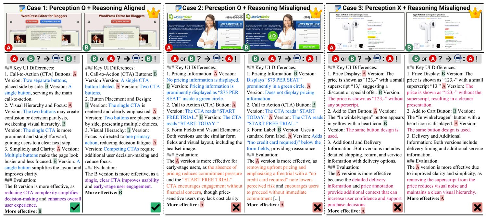
图 6：InternVL-2.5-38B 在 UI/UX 设计选择任务上的回答示例，展示每个样例在不同输入图像顺序下的模型输出。蓝色标示对 UI 改动的正确感知，红色表示错误或幻觉式感知；紫色表示与用户行为模式相符的推理，橙色表示不相符的推理。
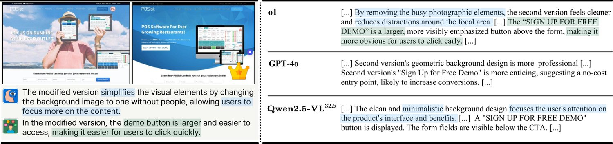
图 7：o1、GPT-4o 与 Qwen2.5-VL-32B 在 UI/UX 设计解读任务上的回答示例。绿色与蓝色高亮标出完整涵盖专家解读的要点。
We further analyze Interpretation Recall scores by UX dimension to examine which types of UX interpretations are more readily recovered, as a true understanding of UI/UX requires capturing the full range of cognitive aspects—perception, memory, and action. As shown in Figure 5, o1 performs best on Perception, indicating relatively stronger ability to explain which visual cues are likely noticed by users, whereas GPT-5.1 achieves the highest score on Action, suggesting better performance on interaction-oriented explanations. More broadly, no single model dominates uniformly across all three dimensions. Performance remains below or around 70% across most dimensions, underscoring the need for more holistic modeling of UI/UX understanding across multiple cognitive aspects.
我们进一步按 UX 维度分析解读召回率，考察哪类 UX 解读更容易被还原——因为对 UI/UX 的真正理解需要覆盖感知、记忆与行动这一完整的认知谱系。如图 5 所示，o1 在感知维度上表现最佳，说明它相对更擅长解释哪些视觉线索可能被用户注意到；GPT-5.1 则在行动维度上得分最高，说明它在面向交互的解释上表现更好。更广泛地看，没有哪个模型在三个维度上全面占优；多数维度上的表现仍低于或徘徊在 70% 附近，凸显出对跨多个认知层面的 UI/UX 理解作更整体建模的必要性。
For the UI/UX design selection task, we analyze the success and failure modes of the strong-performing model, InternVL-2.5-38B, as shown in Figure 6, focusing on cases where the model makes consistent decisions under both input image orders. In Case 1, the model correctly perceives the UI change as the presence of a CTA button and selects the more effective UI/UX, providing a reason that behaviorally aligns with the user behavior pattern implied by the A/B test outcome, hypothesizing that fewer CTAs better focus user attention. In Case 2, although the model correctly identifies differences such as pricing badges and CTA text, it fails to select the winning variant identified by the A/B test, instead offering misaligned reasoning that higher visual saliency negatively impacts user behavior by inducing commitment pressure. In Case 3, the model fails at perception level, hallucinating non-existent changes instead of recognizing the actual button color difference, which ultimately leads to an incorrect final decision.
针对 UI/UX 设计选择任务，我们分析了表现强劲的 InternVL-2.5-38B 的成功与失败模式（图 6），聚焦模型在两种输入图像顺序下作出一致判断的情形。案例 1 中，模型正确地把 UI 改动感知为 CTA 按钮的有无，并选中更有效的 UI/UX，给出的理由在行为上与 A/B 测试结果所隐含的用户行为模式相符——它假设更少的 CTA 能更好地聚焦用户注意力。案例 2 中，模型虽然正确识别出价格角标与 CTA 文案等差异，却未能选中 A/B 测试确定的胜出变体，反而给出不相符的推理：更高的视觉显著性会通过引发承诺压力而对用户行为产生负面影响。案例 3 中，模型在感知层面即告失败，幻觉出并不存在的改动，而未能识别真实的按钮颜色差异，最终导致错误判断。
Figure 7 shows a case from the UI/UX design interpretation task. The UI on the right was verified by A/B test results as the more effective design, with experts attributing its effectiveness to a simplified background and an enlarged demo button, along with their associated effects, factors that models must explicitly capture for an accurate interpretation. o1 succeeds by directly highlighting these key points. GPT-4o correctly identifies the relevant UI elements, but provides an incorrect or vague explanation for their impact. Qwen2.5-VL-32B correctly notes the minimalist design, but stops at identifying the button, missing the key detail of its enlargement and resulting in an incomplete explanation. As shown here, models often identify and emphasize salient surface-level differences, but fall short in capturing deeper behavioral implications and UX reasoning, limiting interpretive depth relative to experts.
图 7 展示了 UI/UX 设计解读任务中的一个案例。右侧 UI 经 A/B 测试结果验证为更有效的设计，专家把其有效性归因于简化的背景与放大的演示按钮及其连带效果——模型必须明确捕捉这些因素才能作出准确解读。o1 通过直接指出这些关键点而成功；GPT-4o 正确识别了相关 UI 元素，但对其影响给出的解释错误或含糊；Qwen2.5-VL-32B 正确注意到极简设计，却止步于识别按钮，遗漏了按钮被放大这一关键细节，导致解释不完整。由此可见，模型往往能识别并强调表层的显著差异，却难以捕捉更深的行为含义与 UX 推理，限制了其相对专家的解读深度。
We introduce a new task that evaluates multimodal understanding of how design drives user actions in the critical field of UI/UX. To support this, we present WiserUI-Bench, a behavior-focused benchmark uniquely built from diverse, real-world A/B-tested UI variants and expert-curated key interpretations, providing a reliable basis for assessment. Our two tasks, selection and interpretation, go beyond surface-level recognition, requiring models to reason about the behavioral implications of visual design, a cognitively challenging problem. Extensive experiments across both proprietary and open-source MLLMs reveal they exhibit only shallow levels of behavior-aware visual reasoning. Achieving stronger performance on this significant task, particularly across the analyzed UI elements or UX dimensions, may require further training on large-scale, behaviorally grounded UI/UX data that reflects real-world user dynamics. We envision WiserUI-Bench and our work as a step toward multimodal systems capable of not only understanding but also generating visual interfaces grounded in user behavior contexts, aligning with human cognition to optimize user experience. More broadly, we hope to catalyze future research toward deeper UI/UX and human behavior literacy in AI.
我们提出一项新任务，用以评估在 UI/UX 这一关键领域中模型对「设计如何驱动用户行为」的多模态理解能力。为此，我们推出 WiserUI-Bench——一个以行为为核心的基准，其独特之处在于由多样化的、经真实世界 A/B 测试的 UI 变体与专家撰写的关键解读构建而成，为评估提供了可靠依据。我们的选择与解读两项任务超越表层识别，要求模型推理视觉设计的行为含义，这是一个认知上极具挑战的问题。在闭源与开源 MLLM 上的大量实验表明，它们只具备浅层的行为感知视觉推理能力。要在这一重要任务上取得更强表现，尤其是在所分析的 UI 元素或 UX 维度上，可能需要在反映真实世界用户动态的大规模、有行为依据的 UI/UX 数据上作进一步训练。我们展望 WiserUI-Bench 与本文工作能成为迈向这样一类多模态系统的一步：它们不仅能理解、还能生成立足于用户行为情境的视觉界面，并与人类认知相契合以优化用户体验。更广泛地说，我们希望借此推动未来研究，提升 AI 在 UI/UX 与人类行为方面的素养。
Given that user experience patterns vary across cultural contexts and societal norms, cultural biases inevitably exist in our benchmark (Karreman et al., 2016). Also, interactive UIs were not extensively explored in our work. Although the number of 300 UI image pairs may seem limited, publicly available real-world A/B test results are extremely rare, as companies rarely disclose them. Moreover, independently conducting production-level UI experiments at a comparable level and scale was practically infeasible. However, as the first benchmark in this area, we focused on reliability, diversity, and annotation quality, covering a wide range of real-world UI changes and providing expert-curated key interpretations.
由于用户体验模式随文化情境与社会规范而变，本基准不可避免地存在文化偏置（Karreman 等，2016）。此外，交互性 UI 在本工作中未作广泛探索。尽管 300 对 UI 图像在数量上看似有限，但公开可得的真实世界 A/B 测试结果极为稀缺，因为企业鲜少披露此类数据；而独立开展同等水平与规模的生产级 UI 实验在实践上也不可行。不过，作为该领域的首个基准，我们把重心放在可靠性、多样性与标注质量上，覆盖广泛的真实世界 UI 改动并提供专家撰写的关键解读。
To ensure expert-level annotation quality, we recruited three annotators with professional UI/UX backgrounds who are currently employed at global IT companies specializing in UX and AI. We clearly informed them of the academic nature of the task, and they voluntarily participated in the study. We provided each annotator with monetary compensation equivalent to approximately $225 USD, reflecting fair market rates for domain-specific labor, and issued payments within 48 hours of annotation completion. We instructed annotators to focus solely on task-relevant elements and ensured that they were not exposed to or asked to label any sensitive, offensive, or triggering content.
为保证专家级标注质量，我们招募了三位具备专业 UI/UX 背景、目前就职于专注 UX 与 AI 的全球性 IT 企业的标注者。我们明确告知其任务的学术性质，他们自愿参与本研究。我们向每位标注者支付约 225 美元的报酬，反映领域专项劳动的公允市场价，并在标注完成后 48 小时内完成支付。我们要求标注者只关注与任务相关的元素，并确保他们不会接触或被要求标注任何敏感、冒犯性或易引发不适的内容。
Our benchmark does not include any private, user-identifiable, or confidential information. All materials were curated exclusively from publicly accessible promotional case studies (e.g., Success Stories from VWO22 2 https://vwo.com/success-stories) released by the originating platforms, while strictly excluding any restricted or paywalled content. We acknowledge that while some source platforms include copyright notices intended to protect their proprietary assets, they do not provide explicit open redistribution licenses, such as Creative Commons, for their publicly accessible case materials. To responsibly address the absence of explicit licenses and to ensure compliant academic use, WiserUI-Bench is released strictly for non-commercial academic research under a non-commercial license (e.g., CC BY-NC-SA 4.0). Rather than redistributing raw image assets directly, we primarily release source URLs alongside our expert annotations and automated image-processing scripts. We will further maintain transparent communication channels within the repository to accommodate potential inquiries from original content owners and, if necessary, adjust specific entries in accordance with responsible academic data governance.
本基准不包含任何隐私、可识别用户身份或机密信息。所有材料均专门采集自各来源平台发布的公开可访问的推广案例（例如 VWO22 2 https://vwo.com/success-stories 的 Success Stories），并严格排除任何受限或付费墙内容。我们承认，部分来源平台带有旨在保护其专有资产的版权声明，并未为其公开可访问的案例材料提供明确的开放再分发许可（如 Creative Commons）。为负责任地应对明确许可的缺失并确保合规的学术使用，WiserUI-Bench 以非商业许可（如 CC BY-NC-SA 4.0）严格面向非商业学术研究发布；我们主要发布来源 URL 以及专家标注与自动化图像处理脚本，而非直接再分发原始图像资产。我们还将在代码库中保持透明的沟通渠道，以回应原始内容所有者的可能问询，并在必要时依循负责任的学术数据治理调整特定条目。
This work was supported by the Institute of Information & Communications Technology Planning & Evaluation (IITP) grant funded by the Korea Government (MSIT) (No. RS-2024-00338140, Development of learning and utilization technology to reflect sustainability of generative language models and up-to-dateness over time), and by the Culture, Sports and Tourism R&D Program through the Korea Creative Content Agency grant funded by the Ministry of Culture, Sports and Tourism in 2026 (RS-2024-00361757, Development of Multimodal UX Evaluation Platform Technology for XR Spatial Responsive Content Optimization)
本工作得到韩国政府（MSIT）资助的信息通信企划评价院（IITP）项目支持（编号 RS-2024-00338140，面向生成式语言模型可持续性与时新性的学习与利用技术开发），以及韩国文化体育观光部与韩国创意内容振兴院 2026 年度文化体育观光 R&D 项目支持（RS-2024-00361757，面向 XR 空间响应式内容优化的多模态 UX 评估平台技术开发）。
During benchmark construction process, we observed that some UI images from our data sources included manual indicators, such as circled regions, numbered markers, and arrows, highlighting specific UI elements related to reasoning points from A/B test results (see Figure 17). While helpful for human interpretation, these indicators introduced artificial attention cues that could potentially bias model evaluation.
在基准构建过程中，我们注意到数据来源中的部分 UI 图像带有人工指示标记，如圈选区域、编号标记与箭头，用于突出与 A/B 测试推理点相关的特定 UI 元素（见图 17）。这些标记虽有助于人类解读，却引入了人为的注意线索，可能使模型评估产生偏置。
To mitigate this, we cleaned the dataset using inpainting techniques. We first identified common indicator patterns via edge detection and color-based segmentation, including circular highlights drawn in semi-transparent colors, numbered markers, and arrows. Our automated pipeline primarily utilized OpenCV (Bradski, 2000) for marker detection and inpainting. For a small number of complex cases where automated methods were insufficient, we applied a hybrid refinement approach using AI-based editing tools (e.g., Gemini33 3 https://gemini.google.com). These tools were used solely to remove attached markers or visual indicators, without modifying the underlying UI layout or design elements. This process ensured a cleaner, more naturalistic dataset for fair visual reasoning evaluation.
为此，我们用图像修复技术清洗数据集：先通过边缘检测与基于颜色的分割识别常见的指示标记模式，包括以半透明颜色绘制的圆形高亮、编号标记与箭头。自动化流程主要使用 OpenCV（Bradski，2000）完成标记检测与修复；对少数自动化方法不足以处理的复杂情形，我们采用基于 AI 编辑工具（如 Gemini33 3 https://gemini.google.com）的混合精修方案。这些工具仅用于移除附加的标记或视觉指示，不改动底层 UI 布局或设计元素。该流程确保了数据集更干净、更自然，以支持公平的视觉推理评估。
As shown in Figure 20, three UI/UX experts were presented with a pair of UI images, one designated as the winner based on A/B test results, along with the corresponding source website link. Experts were instructed to provide key interpretations explaining why the winning variant supported user actions more effectively than the alternative. We engaged domain experts for this task, as user behavior is often subconscious and shaped by implicit context, making evaluation by non-experts inherently difficult.
如图 20 所示，三位 UI/UX 专家会看到一对 UI 图像，其中一张依 A/B 测试结果被指定为胜出方案，并附有对应来源网站链接。专家被要求给出关键解读，解释胜出变体为何比另一方案更有效地促成用户行为。我们请领域专家承担该任务，是因为用户行为往往是潜意识的、由隐性情境塑造，非专家很难作出评判。
Annotators were guided by two resources: textual descriptions from the original sources, which often highlight key design intentions, and the Nielsen Norman 10 Usability Heuristics (Nielsen, 1994), a robust theoretical framework widely used in usability research, which served as broad conceptual criteria. The resulting interpretations were then mapped to 12 curated UX laws that remain widely applied in practice. These laws provide concrete, actionable guidance across diverse aspects of user experience, which can be categorized into three cognitive dimensions: Perception, Memory, and Action. This classification is inspired by the framework proposed by Norman (2007), which introduced the concept of Emotional Design. The full list of UX laws and their classifications is presented in Table 5.
标注者参照两份资料：一是原始来源的文字描述，其中常突出关键设计意图；二是 Nielsen Norman 的 10 条可用性启发式（Nielsen，1994）——一个在可用性研究中被广泛使用的稳健理论框架，充当宽泛的概念性判据。所得解读随后被映射到 12 条在实务中仍被广泛应用的 UX 定律上。这些定律针对用户体验的方方面面提供具体可操作的指引，可归入三个认知维度：感知、记忆与行动。该分类受 Norman（2007）提出的框架启发，后者引入了情感化设计的概念；UX 定律完整清单及其分类见表 5。
Figure 18 presents the distribution of WiserUI-Bench across page types, industry domains, device types. For clarification on the page type classification, the homepage refers to the main entry point of a website, typically offering broad navigation and general content. In contrast, a landing page is usually a standalone page optimized for a specific user action, such as signing up or making a purchase.
图 18 展示了 WiserUI-Bench 在页面类型、行业领域与设备类型上的分布。关于页面类型分类的说明：主页指网站的主要入口，通常提供宽泛的导航与通用内容；与之相对，落地页通常是为特定用户行为（如注册或购买）而优化的独立页面。
Full distribution of UI change attribute types is shown in Figure 19. For clarification, element-level counts reflect the number of distinct UI components affected, while attribute-level counts capture the total number of modified attributes across all components. For example, an instance annotated as <Input Field: Padding, Color / Button: Color> is counted as 2 element changes and 3 attribute changes.
UI 改动属性类型的完整分布见图 19。需要澄清的是，元素级计数反映受影响的不同 UI 组件数量，而属性级计数反映所有组件上被修改属性的总数。例如，一个标注为 <Input Field: Padding, Color / Button: Color> 的实例被计为 2 项元素改动与 3 项属性改动。
For proprietary MLLMs, we accessed the models via their official API endpoints as follows:
对于闭源 MLLM，我们通过其官方 API 端点访问模型，具体如下：
o1 OpenAI et al. (2024b):
o1-2024-12-17
• o1（OpenAI 等，2024b）：o1-2024-12-17
GPT-5.1 OpenAI (2025):
gpt-5.1-2025-11-13
(reasoning effort: none)
• GPT-5.1（OpenAI，2025）：gpt-5.1-2025-11-13（推理强度：none）
GPT-4o OpenAI et al. (2024a):
gpt-4o-2024-08-06
• GPT-4o（OpenAI 等，2024a）：gpt-4o-2024-08-06
Claude 4.5 Sonnet Anthropic (2025):
claude-sonnet-4-5-20250929
(thinking type: disabled)
• Claude 4.5 Sonnet（Anthropic，2025）：claude-sonnet-4-5-20250929（思考类型：禁用）
Claude 3.5 Sonnet Anthropic (2024):
claude-3-5-sonnet-20240620
• Claude 3.5 Sonnet（Anthropic，2024）：claude-3-5-sonnet-20240620
For open-source models, we used publicly available weights from the Huggingface Hub44 4 https://huggingface.co/models. Specific model versions are as follows:
对于开源模型，我们使用 Huggingface Hub44 4 https://huggingface.co/models 上公开可用的权重，具体模型版本如下：
Qwen3-VL-30B-A3B Bai et al. (2025a):
Qwen/Qwen3-VL-30B-A3B-Instruct
• Qwen3-VL-30B-A3B（Bai 等，2025a）：Qwen/Qwen3-VL-30B-A3B-Instruct
Qwen3-VL-8B Bai et al. (2025a):
Qwen/Qwen3-VL-8B-Instruct
• Qwen3-VL-8B（Bai 等，2025a）：Qwen/Qwen3-VL-8B-Instruct
Qwen2.5-VL-32B Bai et al. (2025b):
Qwen/Qwen2.5-VL-32B-Instruct
• Qwen2.5-VL-32B（Bai 等，2025b）：Qwen/Qwen2.5-VL-32B-Instruct
Qwen2.5-VL-7B Bai et al. (2025b):
Qwen/Qwen2.5-VL-7B-Instruct
• Qwen2.5-VL-7B（Bai 等，2025b）：Qwen/Qwen2.5-VL-7B-Instruct
InternVL-2.5-38B Chen et al. (2025):
OpenGVLab/InternVL2_5-38B
• InternVL-2.5-38B（Chen 等，2025）：OpenGVLab/InternVL2_5-38B
InternVL-2.5-8B Chen et al. (2025):
OpenGVLab/InternVL2_5-8B
• InternVL-2.5-8B（Chen 等，2025）：OpenGVLab/InternVL2_5-8B
LLaVA-NeXT-7B Liu et al. (2024a):
llava-hf/llava-v1.6-mistral-7b-hf
• LLaVA-NeXT-7B（Liu 等，2024a）：llava-hf/llava-v1.6-mistral-7b-hf
LLaVA-OneVision-7B Li et al. (2024a):
llava-hf/llava-onevision-qwen2-7b-ov-hf
• LLaVA-OneVision-7B（Li 等，2024a）：llava-hf/llava-onevision-qwen2-7b-ov-hf
The temperature for all models was set to 0.2.
所有模型的温度均设为 0.2。
All experiments using open-source models were conducted on a Linux machine (Ubuntu 20.04.6 LTS) equipped with 4 NVIDIA RTX A6000 GPUs, each with 48GB VRAM. We used the following software libraries and frameworks: transformers version 4.53.2 and vllm version 0.9.2.
所有开源模型实验在一台 Linux 机器（Ubuntu 20.04.6 LTS）上进行，配备 4 块 NVIDIA RTX A6000 GPU，每块 48GB 显存。所使用的软件库与框架包括：transformers 4.53.2 版与 vllm 0.9.2 版。
Figures 8 through 14 show the prompts used, including those designed for diverse reasoning strategies.
图 8 至图 14 展示了所使用的提示，包括为多种推理策略设计的提示。
Token counts across reasoning strategies on proprietary models are presented in Table 6.
表 6 给出了闭源模型上各推理策略的词元数量。
Table 7 presents the standard deviation across three experiment runs for each model and reasoning method. For metric abbreviation, FS and SS denote the standard deviation when the first or second UI image input was the more effective one, while AS and CS refer to the standard deviation of total correct and both correct cases, respectively.
表 7 给出了各模型与推理方法在三次实验运行上的标准差。关于指标缩写，FS 与 SS 分别表示输入中第一张或第二张 UI 图像为更有效方案时的标准差，AS 与 CS 则分别表示总正确数与两次均正确情形的标准差。
Figure 21 and 22 present the additional case studies across different models. Figure 23 shows an example comparing various reasoning strategies executed with GPT-4o.
图 21 与图 22 给出了跨不同模型的补充案例研究，图 23 展示了在 GPT-4o 上执行多种推理策略的对比示例。
Figure 15 presents the prompt used for models’ interpretation generation, and Figure 16 presents the prompt used for its GPT-4o-based evaluation.
图 15 展示了用于模型生成解读的提示，图 16 展示了用于基于 GPT-4o 评估的提示。
Alongside Interpretation Recall and Instance-level Recall from GPT-4o-based evaluation, we report BLEU, ROUGE, METEOR, and BERTScore Papineni et al. (2002); Lin (2004); Banerjee and Lavie (2005); Zhang et al. (2020) in Table 8 as complementary lexical-overlap metrics.
除基于 GPT-4o 评估的解读召回率与实例级召回率外，我们还在表 8 中报告 BLEU、ROUGE、METEOR 与 BERTScore（Papineni 等，2002；Lin，2004；Banerjee 和 Lavie，2005；Zhang 等，2020）作为补充的词汇重叠指标。
The consistently low scores observed in BLEU, ROUGE, and METEOR primarily stem from verbosity and vocabulary differences between concise expert interpretations and more elaborative model-generated explanations, as also illustrated in Figure 7. As such, these metrics largely capture stylistic divergence rather than true semantic misalignment, In contrast, our recall-based metrics are explicitly designed to assess semantic inclusion, thereby providing a more faithful characterization of the alignment between expert and model interpretations, which motivates their use as the main evaluation criterion.
BLEU、ROUGE 与 METEOR 上持续偏低的得分，主要源于简练的专家解读与更铺陈的模型生成解释在详略与用词上的差异（图 7 亦有体现）。因此这些指标很大程度上捕捉的是风格分歧，而非真正的语义错位；相比之下，我们基于召回率的指标专为评估语义涵盖而设计，能更忠实地刻画专家解读与模型解读之间的对齐程度，这也是我们将其用作主要评估准则的原因。
Figure 24 presents an additional case study across different models.
图 24 给出了跨不同模型的补充案例研究。
Icons used in this paper are from Flaticon (https://www.flaticon.com), and they are attributed to the respective authors as required by Flaticon’s license.
本文所用图标来自 Flaticon（https://www.flaticon.com），并按 Flaticon 许可要求署名给相应作者。
| UX Dimension | UX Law | Description |
| Perception | Law of Common Region Koffka (1922) | Elements sharing a boundary or background are perceived as a unified group. This can be a visible border, a colored box, or a distinct region in the layout. |
| Law of Proximity (Koffka, 1922) | Items positioned close together are seen as belonging to the same group. This mental shortcut helps users quickly identify relationships between adjacent elements. | |
| Law of Prägnanz (Koffka, 1922) | Humans naturally perceive and interpret complex images in their simplest forms. It reduces cognitive effort by helping us group and understand elements more quickly. | |
| Law of Similarity (Koffka, 1922) | People group together elements that look alike, assuming they serve a similar purpose. Consistency in color, shape, or size leads the user to see these items as related. | |
| Memory | Von Restorff Effect (Von Restorff, 1933) | People remember a distinct element more easily than others that blend in. This is also known as the Isolation Effect, emphasizing our attention on anything unusual. |
| Serial Position Effect (Ebbinghaus et al., 1913) | Users tend to remember the first and last items in a series more than those in the middle. This influences how they recall sequential information or actions. | |
| Miller’s Law (Miller, 1956) | On average, people can hold only about seven items in their working memory at once. Going beyond this limit causes cognitive overload. | |
| Jakob’s Law (Nielsen, 2000) | Users expect new interfaces to operate similarly to those they’ve used before. Leveraging established patterns lowers cognitive load and accelerates adoption. | |
| Action | Hick’s Law (Hick, 1952) | Decision time rises with the number and complexity of choices. Too many options can overwhelm users and slow their actions. |
| Pareto Principle (Pareto, 1919) | Roughly 80% of outcomes stem from 20% of causes. Focusing on the most impactful features or tasks delivers the greatest improvement. | |
| Fitts’s Law (Fitts and Peterson, 1964) | The time required to reach a target depends on its size and distance. Larger, closer elements are easier to access quickly and accurately. | |
| Goal-Gradient Effect (Hull, 1932) | Motivation increases as people get closer to finishing a task. Providing clear progress markers encourages users to continue and complete it faster. |
表 5：用于解读标注的 UX 定律概览，及其按认知维度（感知、记忆、行动）的分类。
| Models | Methods | Input Tokens | Output Tokens |
| o1 | Zero-Shot | 1292.5 ( 559.77) | 1347.7 ( 489.76) |
| GPT-4o | Zero-Shot | 1453.4 ( 634.41) | 248.8 ( 57.98) |
| CoCoT | 1458.4 ( 634.41) | 329.7 ( 63.29) | |
| Self-Refine | 5240.4 ( 1935.80) | 820.9 ( 142.43) | |
| DDCoT | 1521.4 ( 634.41) | 415.3 ( 73.42) | |
| MAD (R1) | 4942.4 ( 1903.15) | 483.1 ( 58.5) | |
| MAD (R3) | 11501.5 ( 4435.48) | 1158.1 ( 82.60) | |
| Claude 3.5 Sonnet | Zero-Shot | 1686.6 ( 1062.43) | 401.4 ( 72.94) |
| CoCoT | 1692.5 ( 1062.58) | 487.0 ( 82.28) | |
| Self-Refine | 6230.7 ( 3245.69) | 1201.4 ( 207.32) | |
| DDCoT | 1754.5 ( 1064.29) | 582.2 ( 97.13) | |
| MAD (R1) | 5895.5 ( 3224.31) | 834.1 ( 125.13) | |
| MAD (R3) | 13853.4 ( 7512.63) | 1936.5 ( 276.14) |
表 6：WiserUI-Bench 上 UI/UX 设计选择任务的词元数量（）概览。
| Model | Method | FS | SS | AS | CS |
| o1 | Zero-Shot | 1.528 | 2.082 | 3.606 | 0.577 |
| GPT-4o | Zero-Shot | 1.528 | 1.000 | 2.082 | 1.528 |
| CoCoT | 4.000 | 2.646 | 1.732 | 1.732 | |
| Self-Refine | 2.517 | 1.000 | 3.215 | 0.577 | |
| DDCoT | 2.082 | 2.309 | 0.577 | 2.517 | |
| MAD (R1) | 3.215 | 3.055 | 6.245 | 2.646 | |
| MAD (R3) | 0.577 | 2.082 | 1.732 | 3.215 | |
| Claude 3.5 Sonnet | Zero-Shot | 1.528 | 2.000 | 3.512 | 2.887 |
| CoCoT | 3.055 | 3.512 | 0.577 | 0.577 | |
| Self-Refine | 2.646 | 3.512 | 4.619 | 1.528 | |
| DDCoT | 2.082 | 1.732 | 0.577 | 2.517 | |
| MAD (R1) | 1.000 | 1.528 | 2.309 | 4.359 | |
| MAD (R3) | 1.000 | 2.887 | 3.786 | 3.786 | |
| Qwen2.5-VL-32B | Zero-Shot | 1.732 | 2.309 | 2.082 | 2.000 |
| Qwen2.5-VL-7B | Zero-Shot | 2.646 | 0.577 | 2.517 | 3.215 |
| InternVL-2.5-38B | Zero-Shot | 2.646 | 1.000 | 3.000 | 3.055 |
| InternVL-2.5-8B | Zero-Shot | 1.000 | 2.646 | 2.646 | 2.000 |
| LLaVA-NeXT-7B | Zero-Shot | 3.512 | 1.155 | 4.583 | 6.028 |
| LLaVA-OneVision-7B | Zero-Shot | 4.041 | 2.309 | 4.359 | 3.512 |
表 7：WiserUI-Bench 上各模型与推理策略在 UI/UX 设计选择任务中三次实验运行的标准差结果。
| Model | BLEU-2 | BLEU-4 | ROUGE-L | METEOR | BERTScore |
| o1 | 0.0181 | 0.0041 | 0.0972 | 0.1630 | 0.8414 |
| GPT-4o | 0.0162 | 0.0040 | 0.0875 | 0.1557 | 0.8233 |
| Claude 3.5 Sonnet | 0.0141 | 0.0037 | 0.0654 | 0.1418 | 0.8076 |
| Qwen2.5-VL-32B | 0.0098 | 0.0025 | 0.0442 | 0.1016 | 0.8085 |
| Qwen2.5-VL-7B | 0.0180 | 0.0048 | 0.0789 | 0.1481 | 0.8331 |
| InternVL-2.5-38B | 0.0128 | 0.0034 | 0.0574 | 0.1225 | 0.8080 |
| InternVL-2.5-8B | 0.0111 | 0.0032 | 0.0510 | 0.1124 | 0.8082 |
| LLaVA-NeXT-7B | 0.0077 | 0.0018 | 0.0386 | 0.0908 | 0.8127 |
| LLaVA-OneVision-7B | 0.0157 | 0.0043 | 0.0718 | 0.1416 | 0.8255 |
表 8：WiserUI-Bench 上 UI/UX 设计解读任务中每条专家解读的文本相似度指标结果。
图 8：零样本策略下 UI/UX 设计选择任务使用的提示。
图 9：CoCoT 策略下 UI/UX 设计选择任务使用的提示。
图 10：Self-Refine 策略下 UI/UX 设计选择任务在审阅步骤使用的提示。提示输入以粗体标示。
图 11：Self-Refine 策略下 UI/UX 设计选择任务在改进步骤使用的提示。提示输入以粗体标示。
图 12：DDCoT 策略下 UI/UX 设计选择任务使用的提示。
图 13：MAD 策略下 UI/UX 设计选择任务在辩论步骤使用的提示，用于论证第一/第二个版本更能驱动用户行为。提示输入以粗体标示。
图 14：MAD 策略下 UI/UX 设计选择任务在裁决步骤使用的提示。提示输入以粗体标示。
图 15：UI/UX 设计解读任务使用的提示。
图 16：UI/UX 设计解读任务中基于 GPT-4o 的评估所用提示。提示输入以粗体标示。
图 17：WiserUI-Bench 中视觉指示移除的示例。左：数据来源网站添加标记后的原始图像。右：经图像修复移除标记，同时保留 UI 元素。
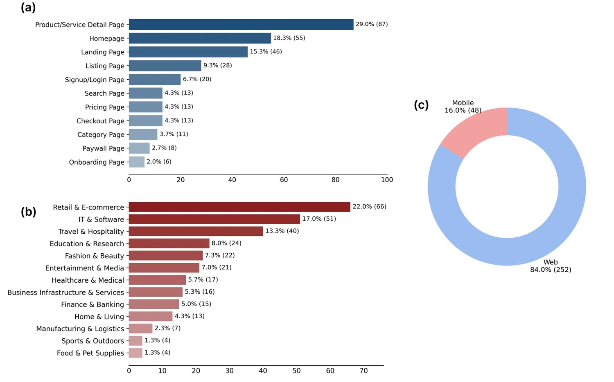
图 18：WiserUI-Bench 在（a）页面类型、（b）行业领域、（c）设备类型上的详细统计。
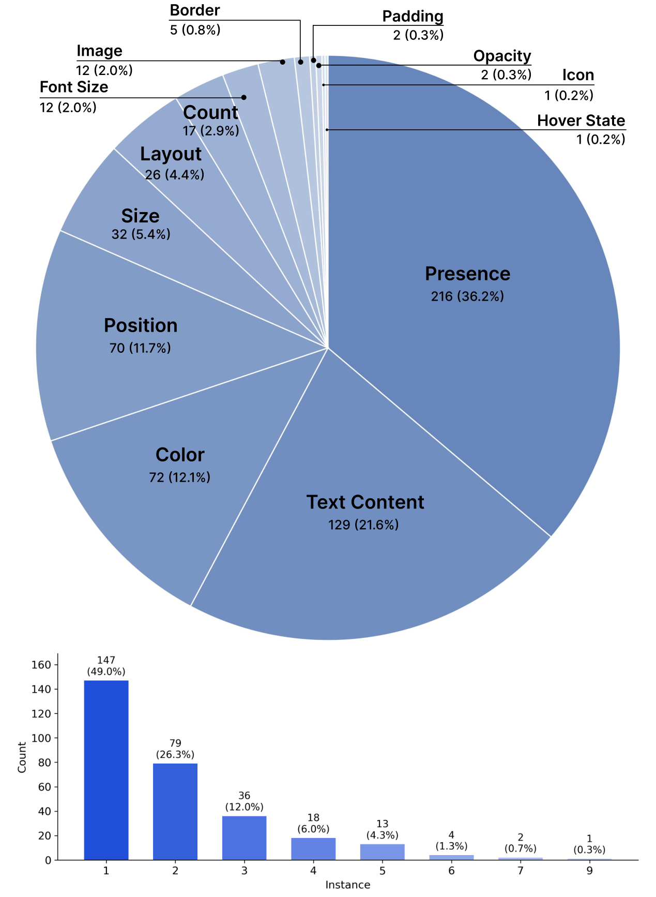
图 19：WiserUI-Bench 在 UI 改动属性类型上的详细统计。
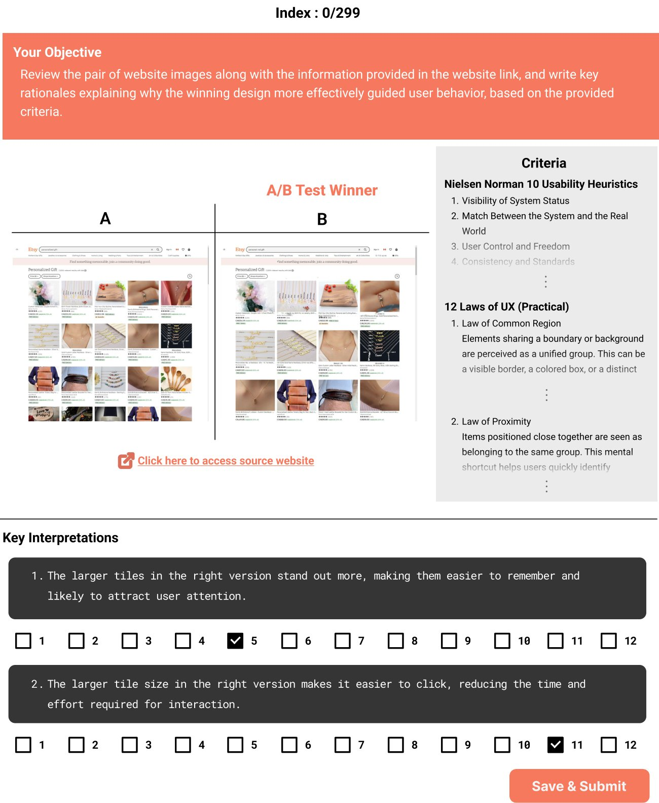
图 20：面向 UI/UX 专家的解读标注界面截图，基于原始数据来源与准则。撰写关键解读后，他们还选出了最相关的 UX 定律。
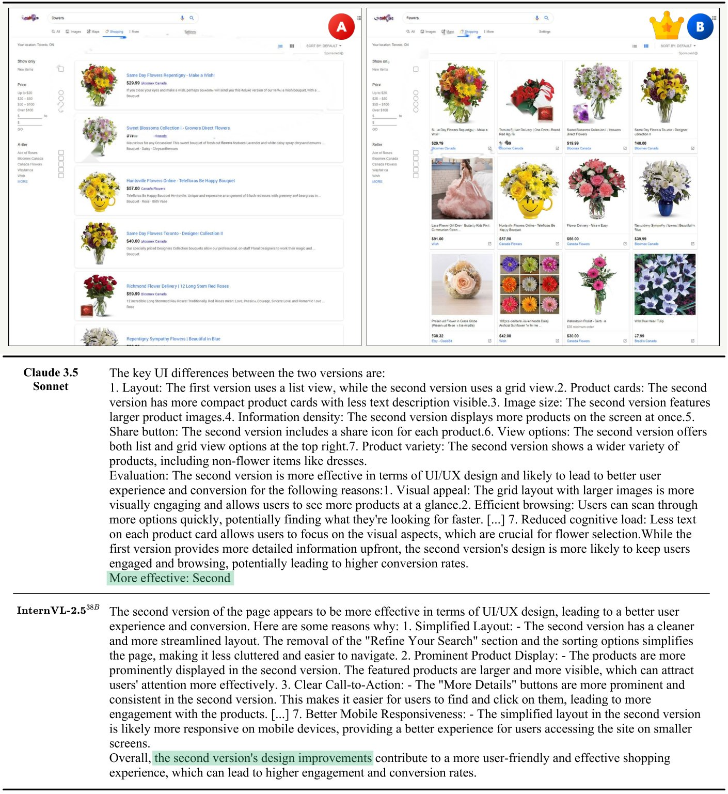
图 21：WiserUI-Bench 上 UI/UX 设计选择任务的定性示例：Claude 3.5 Sonnet 与 InternVL-2.5-38B 均选中了 A/B 测试的胜出方案。
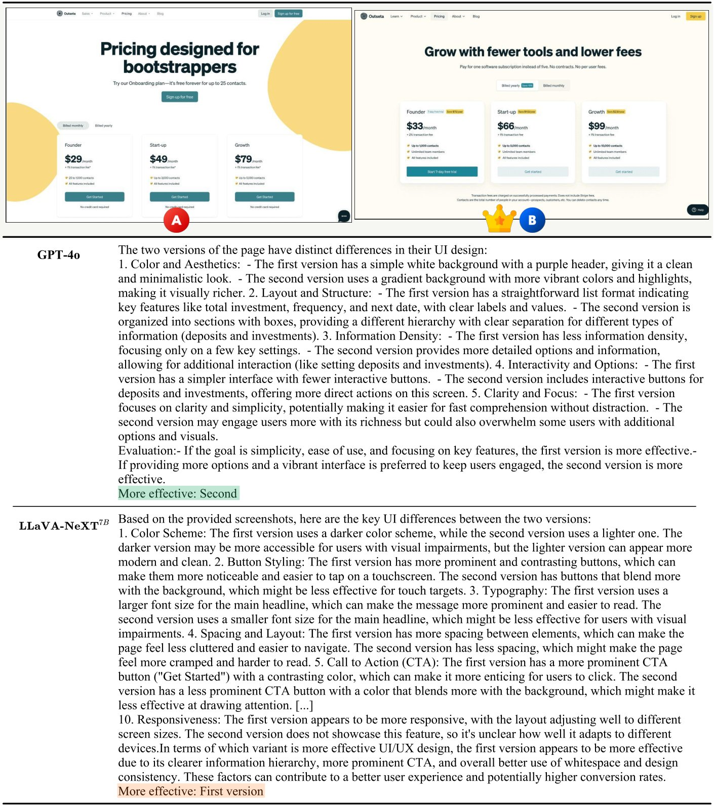
图 22：WiserUI-Bench 上 UI/UX 设计选择任务的定性示例：GPT-4o 选中了 A/B 测试的胜出方案，而 LLaVA-NeXT-7B 未能选中。
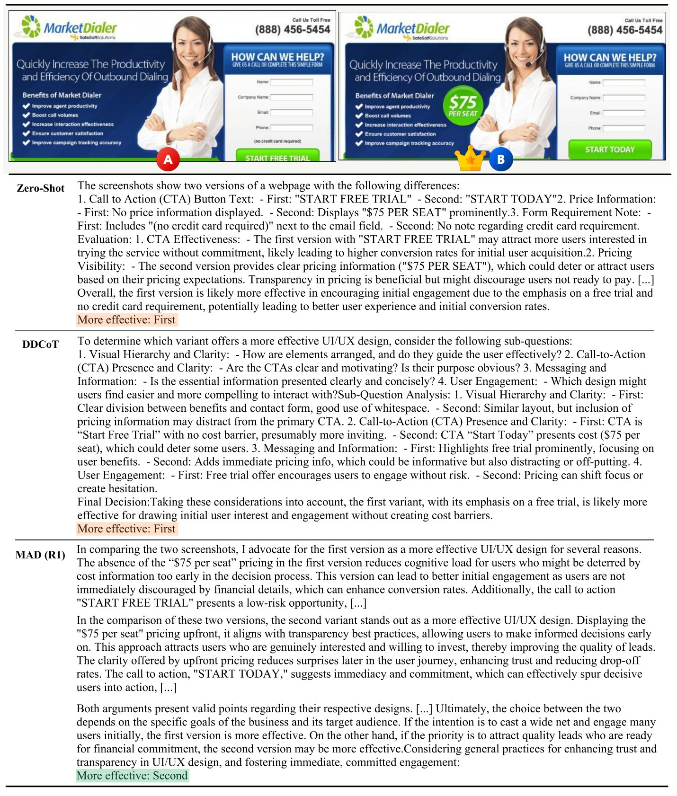
图 23：WiserUI-Bench 上 UI/UX 设计选择任务的定性示例，展示在 GPT-4o 上执行多种推理策略的效果。
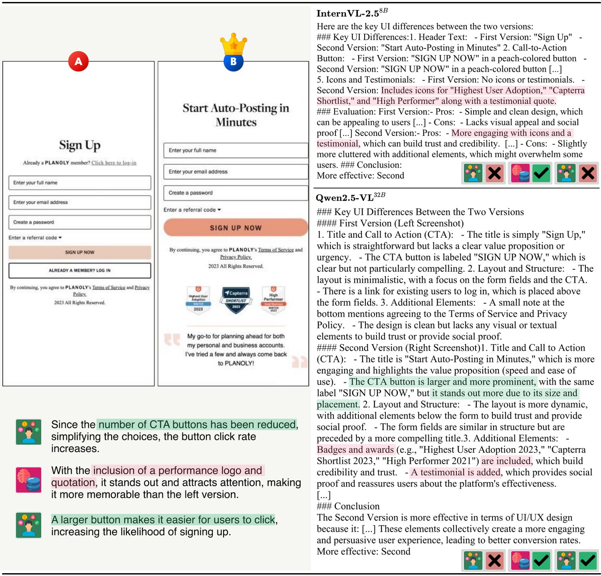
图 24：WiserUI-Bench 上 UI/UX 设计解读任务的定性示例：InternVL-2.5-8B 只捕捉到记忆部分，而 Qwen2.5-VL-32B 识别出两条关键解读。模型回答中的高亮标示与专家撰写关键解读相符的部分。